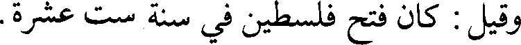
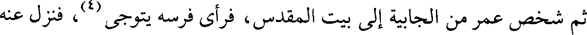
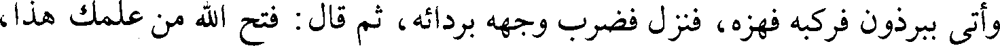
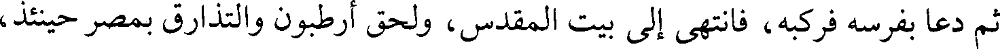
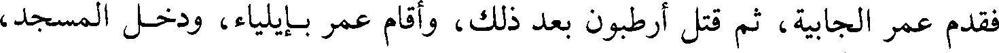
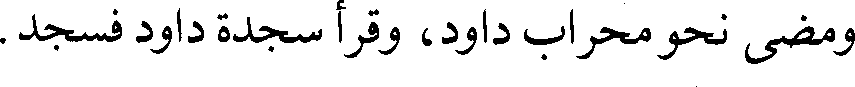
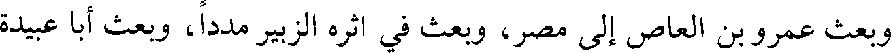

File: 000960.gt.txt (if the image is defective, simply delete all Arabic text and the line will be excluded)
حكيم على نصفها وأنزله [الرملة، وجعل علقمة بن محمد على نصفها وأنزله](2) إيلياء.
File: 000961.gt.txt (if the image is defective, simply delete all Arabic text and the line will be excluded)

وقيل : كان فتح فلسطين في سنة ست عشرة.
File: 000962.gt.txt (if the image is defective, simply delete all Arabic text and the line will be excluded)
[فتح بيت المقدس](3)
File: 000963.gt.txt (if the image is defective, simply delete all Arabic text and the line will be excluded)

ثم شخص عمر من الجابية إلى بيت المقدس، فرأى فرسه يتوجى(4)، فنزل عنه
File: 000964.gt.txt (if the image is defective, simply delete all Arabic text and the line will be excluded)

وأتى ببرذون فركبه فهزه، فنزل فضرب وجهه بردائه، ثم قال : فتح الله من علمك هذا،
File: 000965.gt.txt (if the image is defective, simply delete all Arabic text and the line will be excluded)

ثم دعا بفرسه فركبه، فانتهى إلى بيت المقدس، ولحق أرطبون والتذارق بمصر حينئذ،
File: 000966.gt.txt (if the image is defective, simply delete all Arabic text and the line will be excluded)

فقدم عمر الجابية، ثم قتل أرطبون بعد ذلك، وأقام عمر بإيلياء، ودخل المسجد،
File: 000967.gt.txt (if the image is defective, simply delete all Arabic text and the line will be excluded)

ومضى نحو محراب داود، وقرأ سجدة داود فسجد.
File: 000968.gt.txt (if the image is defective, simply delete all Arabic text and the line will be excluded)

وبعث عمرو بن العاص إلى مصر، وبعث في أثره الزبير مددا، وبعث أبا عبيدة
File: 000969.gt.txt (if the image is defective, simply delete all Arabic text and the line will be excluded)
إلى الرمادة.
To Save: `Ctrl+s`, make sure to choose `Webpage, complete`!